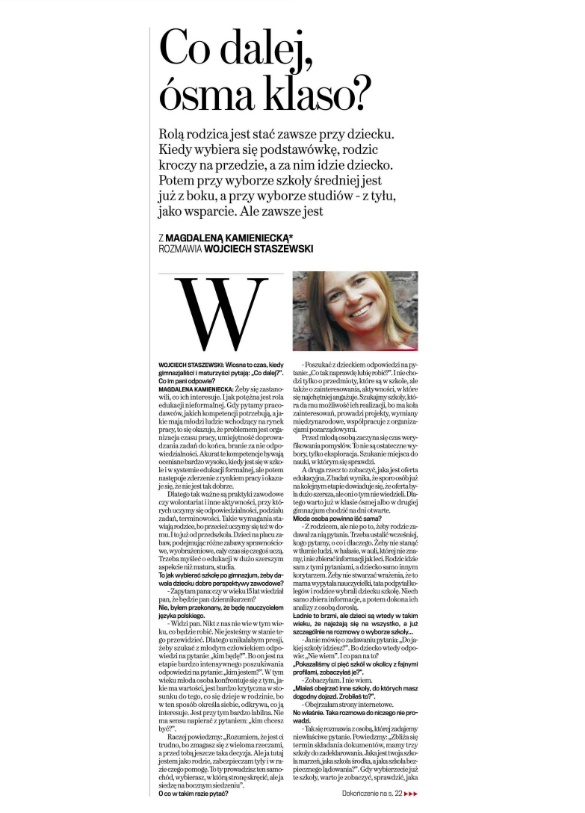
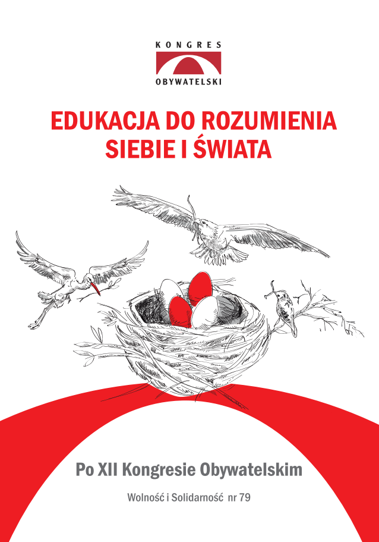
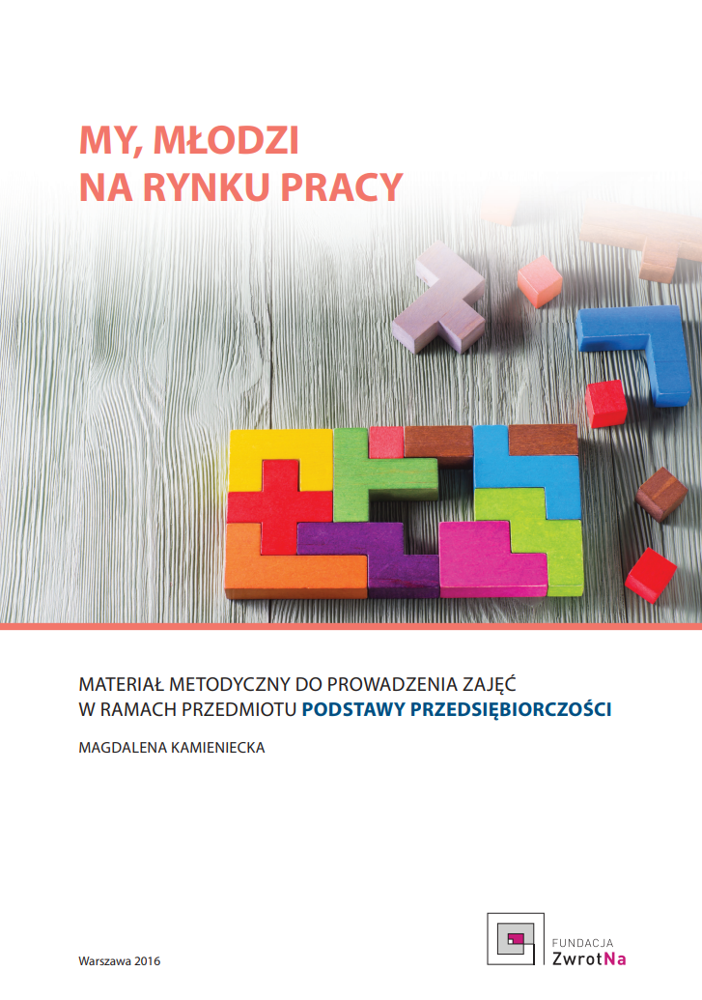

23.04.2018
CO DALEJ, ÓSMA KLASO?

Egzamin gimnazjalny i co dalej? Jak wybierać szkołę po gimnazjum, żeby dawała dziecku dobre perspektywy zawodowe? Czy lepiej wybrać liceum czy technikum? W jaki sposób szukać pomysłu na przyszły zawód? Czy po maturze iść na studia? Jak je wybierać? Jaka jest rola rodzica w procesie wybierania przez dziecko kolejnych szkół?
Te pytania zadają sobie młodzi ludzie i ich rodzice, gdy przychodzi czas na zrobienie kolejnego kroku na drodze edukacyjno-zawodowej i właśnie na nie odpowiadała Magdalena Kamieniecka, prezes Fundacji ZwrotNa w rozmowie z Wojciechem Staszewskim, dzieląc się swoją wiedzą i doświadczeniami zdobytymi w pracy psychologa, w projektach Fundacji ZwrotNa oraz innych działaniach dotyczących doradztwa zawodowego i rynku pracy.
12.04.2018
ZROZUMIEĆ PERSPEKTYWĘ MŁODEGO CZŁOWIEKA

Serdecznie zapraszamy do zapoznania się z najnowszym tekstem autorstwa Magdaleny Kamienieckiej pt. „Zrozumieć perspektywę młodego człowieka”, który ukazał się w podsumowującej XII Kongres Obywatelski publikacji „Edukacja do rozumienia siebie i świata”, WiS nr 79.
Magdalena Kamieniecka, opierając się na bogatych doświadczeniach, zdobytych podczas projektów realizowanych w ramach działań Fundacji ZwrotNa, przybliża czytelnikom optykę młodych ludzi przygotowujących się do wejścia na rynek pracy. Wyjaśnia, jaką rolę w zrozumieniu ich perspektywy odgrywa poznanie uwarunkowań rozwojowych oraz namysł nad przekazami dotyczącymi kształcenia i perspektyw zawodowych, z jakimi spotykają się młodzi ludzie.
Zapraszamy do lektury powyższego tekstu (strona 127) i całej publikacji pokongresowej.
2016
MY, MŁODZI NA RYNKU PRACY
Magdalena Kamieniecka

Materiał metodyczny do prowadzenia zajęć w ramach przedmiotu Podstawy przedsiębiorczości.
Publikacja Fundacji ZwrotNa pt. „My, młodzi na rynku pracy” ma za zadanie pełnić funkcję materiału metodycznego i dedykowany jest osobom projektującym i realizującym program zajęć w ramach przedmiotu podstawy przedsiębiorczości dla uczniów szkół ponadgimnazjalnych, a także adresowany jest do osób, które prowadzą zajęcia z doradztwa edukacyjno-zawodowego.
Zasadniczym celem niniejszej publikacji jest upowszechnienie wypracowanej i pozytywnie zweryfikowanej w praktyce metody projektowej, która poprzez swoją formułę oraz treści rozwija wśród młodzieży postawę przedsiębiorczą, a inicjowana na wczesnym etapie edukacji ponadgimnazjalnej sprzyja świadomemu kształtowaniu zasobów, będących podstawą aktywności i rozwoju zawodowego.
Aby pobrać publikację w formacie PDF – kliknij tutaj
Osoby, które pobiorą publikację z naszej strony internetowej, bardzo prosimy o przesłanie nam informacji zwrotnej za pomocą formularza kontaktowego. Dane te są nam potrzebne do celów sprawozdawczych. Prosimy również o wszelkie komentarze i uwagi na temat publikacji.
30.05.2017
Jak pomóc dzieciom w odkrywaniu talentów, pasji i marzeń – audycja radiowa
Zapraszamy do wysłuchania audycji nagranej w Polskim Radiu 30 maja 2017 roku w ramach cyklu „Strefa Rodzica” z udziałem Magdaleny Kamienieckiej, prezes Fundacji ZwrotNa.
Nagranie dostępne pod linkiem: Polskie Radio – Pierwsze samodzielne wakacje